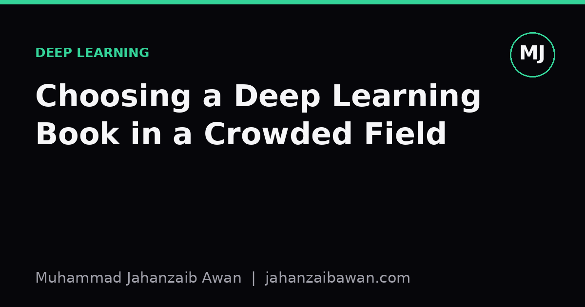

Choosing a Deep Learning Book in a Crowded Field
With dozens of titles promising to teach you deep learning, the real question is not which book is best but which book matches the gap in your understanding right now.

The problem is not quality, it is sequencing
Walk into any decent library or scroll through a bookshop's data science shelf and you will find more deep learning titles than any one person could read in a year. Nearly all of them are competently written. The frustration people report, that they bought a well reviewed book and still felt lost, rarely comes from the book being bad. It comes from reading it at the wrong moment, before or after the gap in their understanding that the book was actually built to fill.
I think of deep learning books as falling into three rough tiers: mathematical foundations, systems and engineering practice, and applied domain specialisation. A reader who has strong linear algebra and calculus but has never trained a model will drown in a book pitched at tier three, full of architecture zoos and leaderboard comparisons, because none of it sticks without the vocabulary from tier one. Equally, a reader who already knows the maths cold and picks up a foundations text again is wasting months rehearsing what they already have.
So the first real decision is not which book but which tier. Be honest about where your actual gap sits, not where you wish it sat. If you can derive backpropagation on paper but have never debugged why a model's validation loss diverges after epoch three, your gap is practice, not theory, and no amount of additional maths will fix it.
A worked example of sequencing gone wrong
Imagine two learners, both starting from a solid undergraduate statistics background. Learner A picks up a dense, theorem-heavy foundations book first, works through perhaps four hundred pages over three months, and can now write out the maths behind convolution, attention, and dropout from memory. Learner B skips straight to a practical, code-first book and spends the same three months training a dozen small models, tweaking learning rates, and watching loss curves.
Neither learner is now ready to do original work, but for different reasons. Learner A has the vocabulary but no intuition for failure modes: they do not know what it looks like when a learning rate is ten times too high, because they have never seen the loss curve spike and never had to diagnose it. Learner B has the opposite problem: they can get a model training but cannot explain why batch normalisation helps, so when something unusual happens, they have no theory to reason from and resort to guesswork.
The efficient path is neither book in isolation but a specific alternation: enough foundational reading to understand what a gradient actually represents and why it can vanish or explode, immediately followed by enough hands-on practice to watch that exact failure happen on a toy dataset. If you set a learning rate two orders of magnitude too high on a small regression problem and watch the loss become NaN within twenty or thirty steps, the earlier chapter on gradient explosion stops being an abstract warning and becomes something you have personally reproduced. That pairing, one chapter of theory followed by one afternoon of deliberately breaking a small model, teaches faster than either activity alone, and faster than most single books manage on their own.
What to actually read first, and in what order
Given that framing, here is the practical heuristic I use when advising people, and the one I apply to myself when I notice a gap. Start with a foundations text only long enough to get comfortable with the core objects: tensors, gradients, loss surfaces, and the basic idea of optimisation as hill descent on a high dimensional surface. You do not need to finish the book. You need enough to recognise the vocabulary when it appears elsewhere.
Then switch to a practical, implementation-focused text or course and build something small end to end, including a baseline you did not expect to beat easily. This step matters more than most people admit. If your first project is a complex architecture and you skip the boring linear or logistic regression baseline, you will not know whether your fancy model is actually earning its complexity or just matching what a much simpler method would have achieved. A baseline that gets eighty two percent accuracy on a balanced binary classification task, against a neural network that gets eighty four percent after far more compute and tuning, tells you something important about where your effort is actually worth spending.
Only after that cycle, foundations followed by a hands-on project with an honest baseline, does it make sense to specialise into a domain-specific book on, say, sequence modelling or vision architectures. Reading a specialised text too early means you absorb architectural tricks without the judgement to know when they are the right tool, and reading one too late means you have likely already reinvented, badly, ideas the book would have given you in a weekend.
The practical takeaway
Do not ask which deep learning book is the best. Ask which gap you currently have: theory, practice, or specialisation, and pick the book built for that specific gap. Give yourself permission to read a foundations book only partially before switching to hands-on work, and resist the pull of advanced architecture books until you have personally broken a small model and understood why it broke.
If you remember one concrete habit from all of this, make it the baseline. Before trusting any book's claims about a fancy method, reproduce a simple baseline yourself on a toy problem and write down the number. Everything you read afterwards, from any book in any tier, becomes easier to judge once you have a number of your own to compare it against.